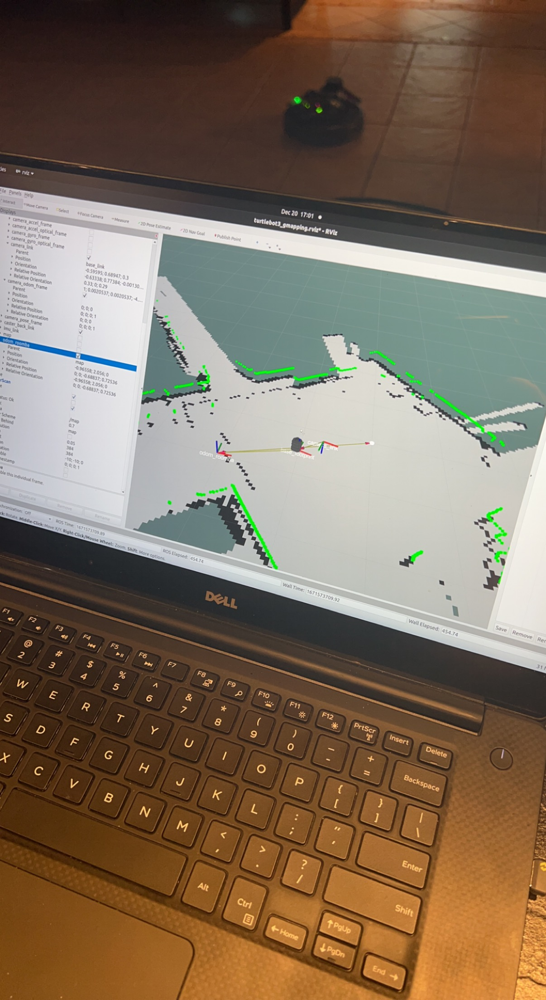
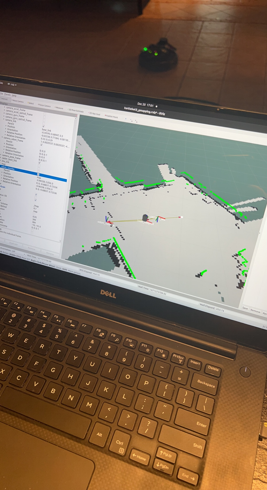
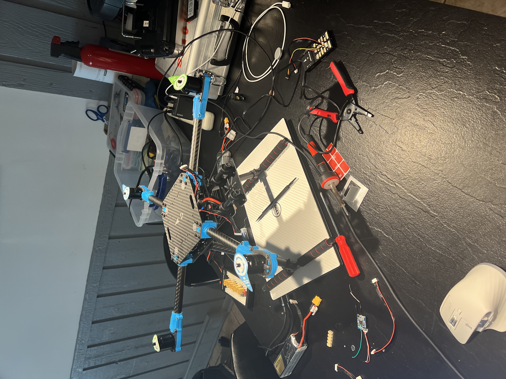

Structure Sensor outside-in 3D scanning
Learning to scan household objects into digital twins for 3D project assets with structured light technology.


Structure Sensor SDK
The below sections serve as a highlight to personal development projects I am proud of over the last several years. Some of them are more software focused, others hardware. There are integration projects, combining off-the-shelf components together to make something new, as well as from-scratch developments. In each section, if available, there are links to GitHub repos of my own work, or SDK links for bought components. In some cases, there are longer form YouTube video links for more information. Hope you enjoy viewing these projects as much as I did while making them!
For any questions, feel free to email at hypertechnica@icloud.com, or comment on my
GitHub home.Learning to scan household objects into digital twins for 3D project assets with structured light technology.
Inside-out interior home scanning via Intel RealSense platform on Linux laptop.


Built from parts to laser-based obstacle avoidance and camera-based line following. Utilized Gazebo for digital twin simulations.

3D printed housing with Nvidia Jetson, 2D laser, and webcam. Interfaced with Roomba MCU for control and odometry reading. The purpose of this project was to port the TurtleBot3 implementation to my own hardware, the Nvidia Jetson and Roomba MCU.

 


Spot welded 12s4p pack, 2000W output, 30-mile range, 35 mph top speed. Designed and 3D printed enclosure, tuned PID loops.


2D facial classification using Transfer Learning with fastai, trained locally on GPU via resnet18.


30kHz scanning laser interfaced with Nvidia Jetson. Real-time PyTorch camera tracking for balloon auto-pop at 145 FPS.


Deployed on Quest 3, spawning scanned 3D assets onto detected surfaces with physics and grab-ability.
GitHub RepositoryIntegrated Nvidia's Neuralangelo on local compute. Converted 2D drone video to 3D color mesh.

8” drone running PX4/Ardupilot, capable of autonomous missions. Can also lift 6lb scanning laser for aerial shows.


Replay attacking modern vehicle lock systems.
GitHub Repository Soon3x 80+ MPH racing drones, tuned PID controllers, and learned RF antenna optimization.
Some Fun (and very old) Flight VideosNAS server project devloped to learn filesystem redundancy, network topology, codec conversions, docker containers, and cybersecurity.